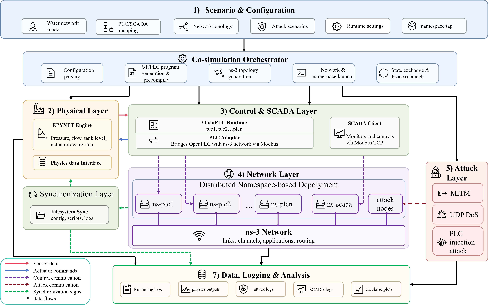
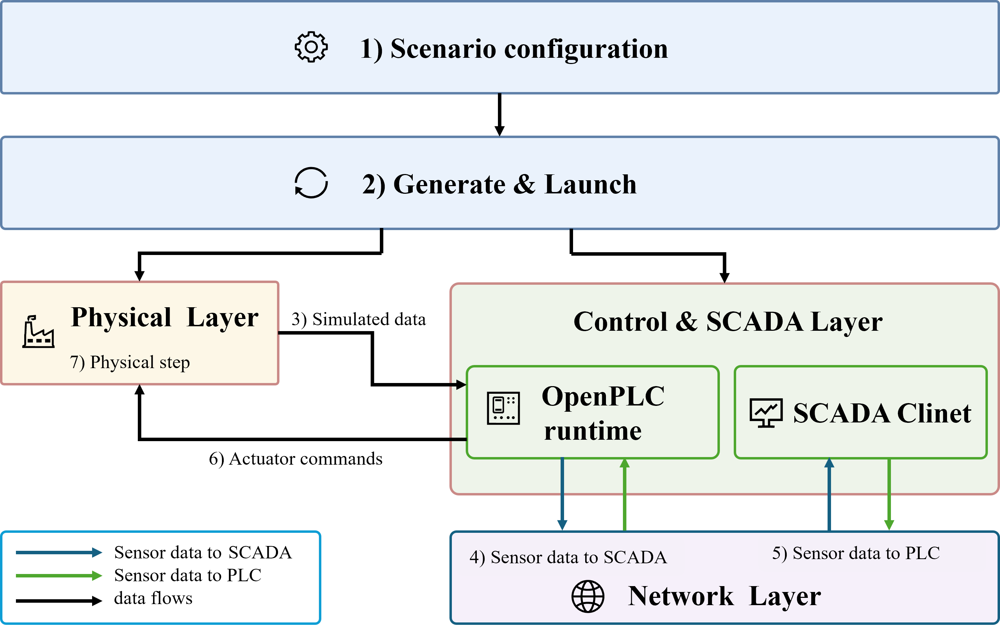

Architecture
Hydro-CPS-Sim connects hydraulic simulation, executable PLC programs, industrial protocols and network paths in a closed loop. Attacks enter through a protocol, network or control interface and can affect hydraulics through controller decisions and actuator feedback.
Platform architecture

| Module | Implementation and responsibility |
|---|---|
| Scenario configuration | YAML describes the water model, PLC/SCADA mappings, control rules, network, attacks and runtime settings |
| Orchestration | Generates ST programs, compiles PLCs, creates the network environment, starts processes and exports results |
| Physical process | DHALSIM-epynet / EPANET advances hydraulics using pump and valve states |
| Control and supervision | OpenPLC executes logic; PLC Adapters bridge I/O; SCADA acquires and forwards data over Modbus TCP |
| Communication | Linux network namespaces provide separate network identities connected to ns-3 through TAP/veth interfaces |
| Attack execution | Injects MITM, DoS or logic modifications at configured interfaces |
| Synchronization | Filesystem markers coordinate process state exchange by experiment iteration |
| Logging | Collects attack, communication, control, actuator and hydraulic records for baseline comparisons |
Closed-loop workflow

- Generate the environment: Read the model and YAML, then generate control programs, address mappings, the ns-3 topology and namespace configuration.
- Initialize: Start OpenPLC, SCADA and network processes; prepare physical state and synchronization directories.
- Acquire and forward: Obtain current sensor state and use SCADA Modbus TCP exchanges to forward cross-PLC control dependencies.
- Execute control: OpenPLC evaluates current inputs and effective rules to produce pump and valve commands.
- Feed back: Apply actuator states to the next hydraulic step to obtain updated levels, pressures and flows.
- Record and compare: Save iteration evidence, advance the loop and compare completed runs with matching baselines.
Iterations coordinate processes. Read hydraulic sim_time for physical time: internal events can shorten steps, so multiplying an iteration number by the nominal step does not establish the actual engine time.
Independent endpoints and protocol exchanges
Each PLC, SCADA and attack endpoint runs in a separate Linux network namespace with its own interfaces and protocol stack. ns-3 supplies configurable links, routing and network dynamics. Normal Modbus exchanges and attack traffic follow the configured network paths.
This preserves intermediate behavior such as program execution, register/coil mappings, request/response exchanges, timeouts and held observations. Researchers can inspect whether communication anomalies change controller inputs and whether those inputs actually trigger actuator changes.
OpenPLC is a software PLC, and namespace endpoints still share host resources. This environment does not reproduce all hardware scheduling, field I/O or device protocol behavior. Topological separation alone does not guarantee that other endpoints experience no indirect effects.
Source entry points
scripts/run_all.sh: preparation, execution and cleanup.src/control/: ST generation, compilation and OpenPLC launch.src/network/: namespace and ns-3 topology generation.src/runtime/,src/sync/: loop coordination and synchronization.src/scada/,src/plc/,src/comm/: acquisition, adapters and Modbus exchanges.src/attack/: attack launch and execution.src/io/: hydraulic interfaces and result exports.
Design descriptions follow the architecture and implementation sections of the project manuscript draft. Runtime interfaces were checked against hydro-cps-sim @ 2406aa6.